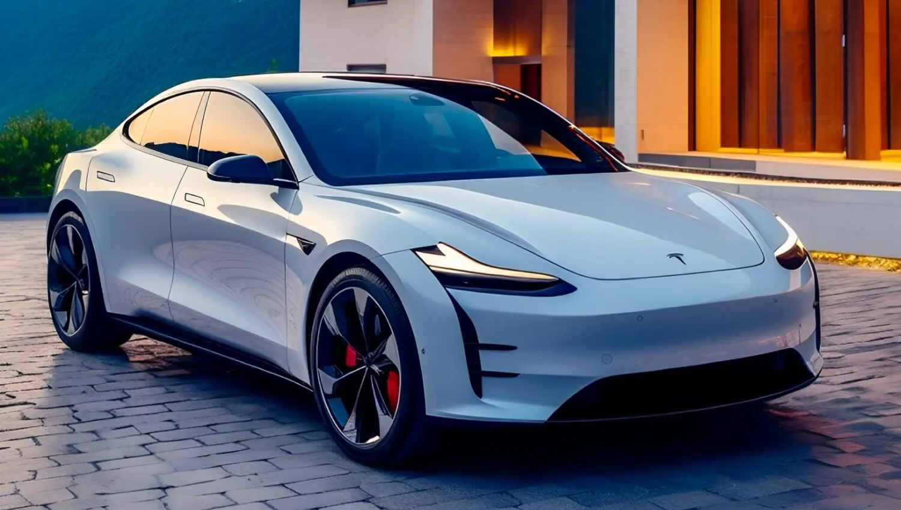

Interactive Tesla Model Y Image Map
The Tesla Model Y is a versatile and stylish electric SUV that offers impressive performance, cutting-edge technology, and a spacious interior. Here are some key features of the 2024 Tesla Model Y:
- Performance: The Model Y comes with dual motor all-wheel drive, providing excellent traction and acceleration. It can go from 0 to 60 mph in just a few seconds.
- Range: With an estimated range of over 300 miles on a single charge, the Model Y is perfect for long trips and daily commutes.
- Interior: The spacious interior can comfortably seat up to seven passengers with an optional third row. The minimalist design features a large touchscreen display for controlling various functions.
